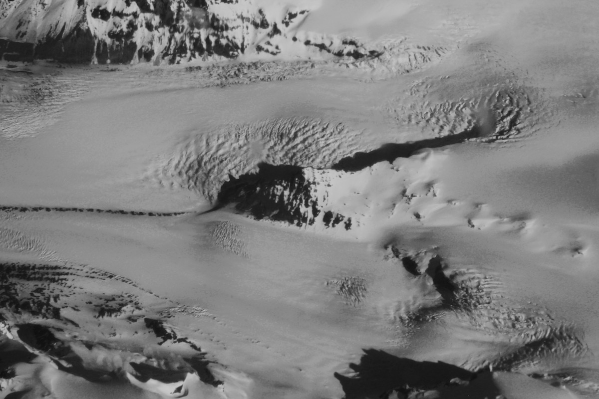

Ice Sheet Stabilization

Current projections of sea-level rise carry large uncertainties driven by our incomplete understanding of ice sheet dynamics. Our group is exploring whether targeted interventions—such as strategically slowing glacier flow at key locations—could meaningfully reduce the risk of rapid, irreversible sea-level rise. This work combines fundamental glacier mechanics with applied engineering thinking to assess the feasibility, efficacy, and risks of stabilization concepts.
Through the Arête Glacier Initiative, we are taking first steps toward developing the science and technology needed to evaluate glacier stabilization as a complement to emissions reduction.
Relevant Scholarly Articles
* graduate students, ** undergraduates, ☆ postdocs and research scientists.
-
Meyer, C. R., Warburton, K. L. P., Sommers, A. N., and Minchew, B. M.. “A model of water extraction from the subglacial hydrologic system under idealized conditions.” The Cryosphere, 2026.
-
Minchew, B. M. and Joughin, I.. “Toward a universal glacier slip law.” Science, 368(6486), 29–30, 2020.
-
Minchew, B. M. and Meyer, C. R.. “Dilation of subglacial sediment governs incipient surge motion in glaciers with deformable beds.” Proceedings of the Royal Society A: Mathematical, Physical and Engineering Sciences, 476(2238), 2020.
Other Publications
-
Minchew, Brent and Meyer, Colin. “We study glaciers. ‘Artificial glaciers’ and other tech may halt their total collapse.” The Guardian, 2026.
-
Minchew, B. M., Mahle, L., Ghosh, P., Sistla, M., and Martin, E. N.. “Polar infrastructure and science for national security: A federal agenda to promote glacier resilience and strengthen American competitiveness.” Day One Project, Federation of American Scientists, 2024.
In the News & Media
-
Forbes: $5 Million To Save The Doomsday Glacier, Can We Prevent Catastrophe?
-
MIT Technology Review: Inside a new quest to save the ‘doomsday glacier’
-
BBC Science Focus Magazine: Doomsday Glacier
-
The Atlantic: Glacier Rescue Project
-
The Atlantic Festival: The Climate Summit
Video
-
My Climate Journey Podcast: Can We Slow the Doomsday Glacier?
Podcast
-
Curiosity Unbounded: Putting a Glacier In Its Place
-
Arête Glacier Initiative Press Release: Launch Announcement
-
Arête 2025 Annual Report
PDF